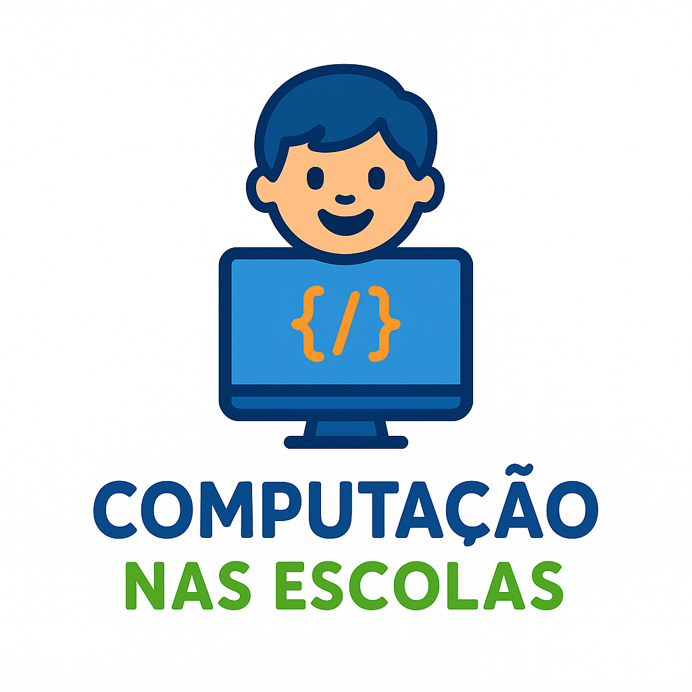

Sobre
O Projeto Snotra é uma iniciativa educacional que busca transformar a maneira como os alunos e desenvolvem habilidades essenciais para o século XXI. Criado e aplicado em escolas públicas no interior do Rio Grande do Sul, o Snotra integra o Pensamento Computacional e a Aprendizagem Baseada em Problemas, utilizando a plataforma de programação visual Scratch.
O Snotra promove um ambiente de aprendizado interativo, onde os alunos são protagonistas na resolução de problemas reais, aplicando conhecimentos de diversas áreas de forma prática e colaborativa.
Objetivos
- Promover a Aprendizagem Contextualizada: Fomentar o aprendizado significativo sobre hábitos alimentares saudáveis, conectando conceitos de nutrição com o cotidiano dos adolescentes.
- Desenvolver o Pensamento Computacional: Capacitar os estudantes nas habilidades de Pensamento Computacional (decomposição, reconhecimento de padrões, abstração e algoritmos) através da programação com Scratch, mesmo sem experiência prévia.
- Estimular o Protagonismo e o Engajamento: Incentivar o papel ativo dos alunos na construção do conhecimento, aprimorando o raciocínio crítico, a criatividade e a capacidade de colaboração por meio da metodologia PBL.
Projetos
- 
Vulcanbots
O projeto de Robótica do IFRS - Campus Ibirubá Vulcanbots convida os alunos do Ensino Médio a mergulharem no fascinante mundo da tecnologia, com foco em habilidades de programação e engenharia. Utilizando kits de robótica e plataformas Arduino, os estudantes são desafiados a transformar ideias em realidade.
Nosso objetivo vai além da teoria. Buscamos estimular o interesse em STEM (Ciência, Tecnologia, Engenharia e Matemática) de forma prática e envolvente. As atividades, promovem não apenas o aprendizado técnico de programação e montagem, mas também o desenvolvimento de raciocínio lógico, a capacidade de resolução de problemas e aprimoramento do trabalho em equipe.
Os resultados são visíveis e motivadores. Nossos alunos já participaram de competições de robótica, onde puderam aplicar o conhecimento adquirido, testar suas criações e interagir com outras equipes, vivenciando o espírito de inovação e superação. Essas experiências são cruciais para prepará-los para os desafios do futuro, seja em cursos superiores ou no mercado de trabalho.
Computação nas Escolas
O projeto Computação nas Escolas, oferecido pelo IFRS - Campus Ibirubá, adota uma metodologia de ensino cujo objetivo é ensinar crianças e jovens a lógica computacional de maneira interativa e lúdica.
Para isso, a principal ferramenta utilizada é o Scratch, uma linguagem de programação visual desenvolvida pelo MIT, que permite a criação de histórias, jogos e animações por meio de blocos coloridos, facilitando o aprendizado dos conceitos básicos de programação sem a necessidade de digitar códigos complexos.
As aulas são oferecidas são destinadas a turmas do ensino fundamental e médio. Os alunos têm demonstrado interesse pela área de informática e um bom aproveitamento das lições ministradas.
Vale ressaltar que a lógica ensinada também será útil em outras áreas do conhecimento, como língua portuguesa e matemática, uma vez que as atividades estimulam os alunos a pensar de forma organizada e lógica, favorecendo o desenvolvimento de habilidades de interpretação e raciocínio estruturado.
Equipes
Vulcanbots
Professora Doutora Fernanda
Graduada em Engenharia de Computação (2011) pela Universidade Federal do Rio Grande - FURG e Mestre em Engenharia de Computação pela FURG (2013). Doutora em Educação em Ciências no Programa de Pós-graduação em Educação em Ciências: Química da vida e saúde - FURG (2018).
Estou trabalhando na área de inteligência artificial voltada para tecnologias persuasivas ubíquas para mudança de comportamento e aumento da motivação dos indivíduos em áreas como a eficiência energética.
Atualmente sou professora do IFRS e coordenadora da Ciência da Computação, também coordeno os projetos Vulcanbots e Computação nas escolas.
Atualmente estou fazendo doutorado em Ciência da Computação pela Universidade Federal de Pelotas - UFPel. Trabalhei na área de inteligência artificial voltada para realidade dual, virtual e mista e em simulação social por meio de sistemas multiagentes.
Professor Mestre Alexandre
Mestre em Tecnologias Educacionais em Rede pela Universidade Federal de Santa Maria (UFSM - 2023), Especialização em Tecnologias da Informação e da Comunicação Aplicadas à Educação (UFSM 2019), Especialização em Formação Pedagógica para Docentes da Educação Profissional Técnica e Tecnológica em Informação e Comunicação pela (CELER 2013), Bacharel em Ciência da Computação pela Universidade de Cruz Alta (UNICRUZ - 2002).
Atualmente é Professor EBTT do IFRS - Instituto Federal de Educação, Ciência e Tecnologia do Rio Grande do Sul.
Tem experiência na área de Ciência da Computação e Administração Pública.
Computação nas Escolas
Professora Doutora Adriana
Possui graduação em Ciências Biológicas pela Universidade da Região da Campanha(2009), Pós graduada em Educação Ambiental pela Universidade de São Paulo(2010), em Gestão Escolar pela Faculdade São Braz(2019),Educação do Campo pela Faculdade São Braz(2019), em Escola da Terra: Educação de Comunidade do Campo, Quilombola e Indígena UFRGS(2023), Mestrado Profissional em Ensino de Ciências pela UNIPAMPA - Bagé(2016), Doutorado em Educação pela UFRGS(2024).Professora de Biologia do Instituto Federal, Ciência e Tecnologia do Rio Grande do Sul (IFRS) atuando no Campus Ibirubá. Possui experiência na gestão escolar(direção, vice- direção e supervisão).
Aponto como temas de interesse: ensino de ciências, interdisciplinaridade agroecologia, sustentabilidade, economia solidária, formação de professores, metodologias de ensino, teoria da complexidade, educação financeira, envelhecimento populacional e desenvolvimento humano.
Professora Doutora Fernanda
Graduada em Engenharia de Computação (2011) pela Universidade Federal do Rio Grande - FURG e Mestre em Engenharia de Computação pela FURG (2013). Doutora em Educação em Ciências no Programa de Pós-graduação em Educação em Ciências: Química da vida e saúde - FURG (2018).
Estou trabalhando na área de inteligência artificial voltada para tecnologias persuasivas ubíquas para mudança de comportamento e aumento da motivação dos indivíduos em áreas como a eficiência energética.
Atualmente sou professora do IFRS e coordenadora da Ciência da Computação, também coordeno os projetos Vulcanbots e Computação nas escolas.
Atualmente estou fazendo doutorado em Ciência da Computação pela Universidade Federal de Pelotas - UFPel. Trabalhei na área de inteligência artificial voltada para realidade dual, virtual e mista e em simulação social por meio de sistemas multiagentes.


Números
Contato
- contato@ibiruba.ifrs.edu.br
- +55 (55) 9 9999-9999
- R. Nelsi Ribas Fritsch, 1111 - Esperança, Ibirubá - RS, 98200-000
- Ibirubá - RS
- Seg à Sex das 8h às 17h